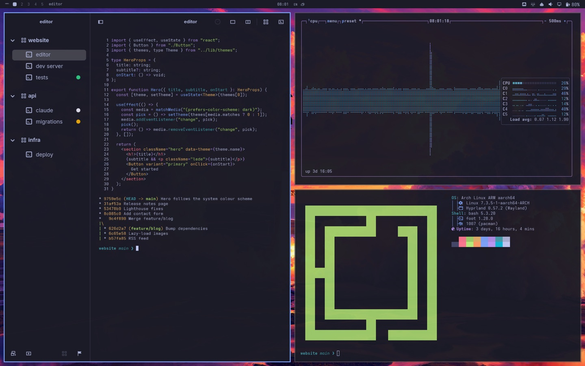
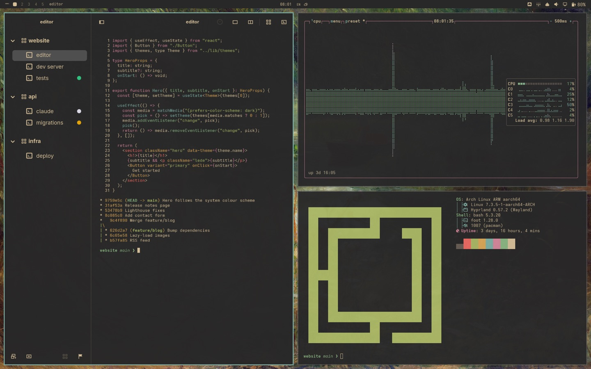
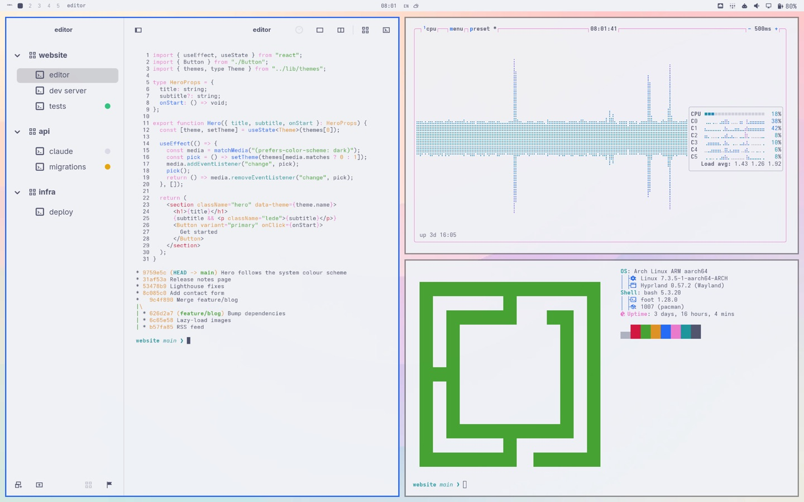

projects / spike-mindidle
spike-mind
A LEGO SPIKE Prime robot driven by Claude over Bluetooth LE. The model calls tools such as move_forward, turn and scan_surroundings.
Claude → Python host → BLE → SPIKE hub
about / whoamicompleted
Who is alexandru-savinov?
Read 3 public repositories
Terminal and agent tooling, and machines kept in Nix. Everything linked from this page is open on GitHub.
about / flake.nixcompleted
# How this page is put together.
{
description = "A personal homepage";
inputs = {
omarchy = "tiles, a bar, palettes";
nix = "inputs, outputs, a lock";
agterm = "a tree of sessions";
claude = "paper, serif, calm";
};
outputs = { self, ... }: {
about = ./whoami;
projects = [
agterm-omarchy
spike-mind sancta
];
elsewhere = ./links;
};
}projects / agterm-omarchyactive
agterm is a terminal for running many shells and coding agents side by side. It groups sessions into named workspaces and shows which agent session needs you.
This project builds and releases the native GTK4/libadwaita Linux version for Omarchy and Arch Linux, on x86_64 and aarch64, with attested releases. It is based on umputun/agterm and melonamin/agterm-linux.



projects / spike-mindidle
A LEGO SPIKE Prime robot driven by Claude over Bluetooth LE. The model calls tools such as move_forward, turn and scan_surroundings.
Claude → Python host → BLE → SPIKE hub
projects / sanctaidle
A personal charter for a quiet, sovereign home for my digital life: the Sancta Charter, an infrastructure-as-code pledge and naming conventions, plus Windows hardening scripts from 2025.
projects / open slotblocked
The next project lands here.
Also on GitHub: patches sent upstream to zmx.
about / nowactive
omarchy-v0.43.0.13, .elsewhere / linkscompleted